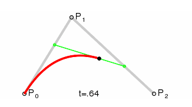
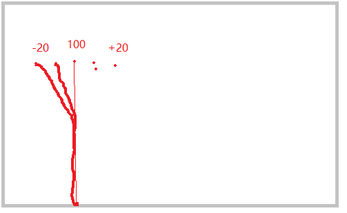
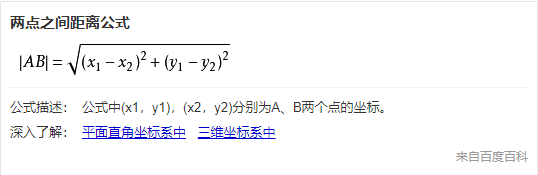

-蓝色大海
-紫色海葵左右摆动
-海葵头顶位置出生食物
-食物 蓝色(多)100 橙色(少) 200
-大鱼负责吃食物
-小鱼跟着大鱼
-大鱼负责喂小鱼
game 游戏目录
src 所有游戏中使用图片(复制图片)
js 所有js文件
index.html 唯一个网页
-创建画布标签
画布一:(前) 大鱼 小鱼 分数 z-index:1
画布二:(后) 背景 海葵 食物 z-index:0
为画布设置样式
游戏程序设计:一个角色一个文件
创建js game/js/background.js
创建drawBackground() 绘制背景图片
-main.js
作用:创建游戏所有全局变量
创建所有游戏中角色对象
绘制游戏角色
-requestAnimationFrame(gameloop);
以前定时器不适合创建动画效果智能定时器
定时器不停计算当前浏览器效率，得出最佳间隔时间
setInterval(fn,200); 固定时间200ms 20ms
固定时间 300ms 200ms
-创建文件 ane.js
-实现海葵依靠直线 路径 lineTo()
-一共50根海葵
-海葵间距 16 800/50
-海葵高度 200 50随机
-创建文件 ane.js
-实现海葵依靠直线 路径 lineTo()
-一共50根海葵
-海葵间距 16 800/50
-海葵高度 200 50随机
功能分析:摆动海葵
解决方案:使用曲线替换直线完成海葵绘制
贝赛尔曲线:

p0:起点坐标
p2:终点坐标
p1:控制点
曲线:从p0开始经过p1控制点最后绘制p2终点这样一条
曲线贝赛尔曲线

初始化:起点坐标 控制点坐标 终点坐标 一致
摆动:终点发生变化 -20 +20
贝赛尔曲线实现
moveTo(起点坐标x,起点坐标y)
quadraticCurveTo(控制点x,控制点y,终点x,终点y);
小知识: 正弦函数
-20 100 +20
右向100 +1 +2 +3 +4 +5 ..+20
左向 100 -1 -2 -3 -4 -5 ..-20
解决方案:正弦函数返回值 -1~1
var p = Math.sin(非常小小数 0.00032); p (-1~1)
(1)30个食物其中蓝色居多橙色很少 fruit.png blue.png
(2)同一个时刻15个食物显示15个隐藏
(3)食物行为:
出生:在海葵终点坐标位置出生
宽度+高度: 0~14
向上漂浮: y- spd
(4)食物漂浮出屏幕 隐藏
(5)食物被大鱼吃了 隐藏
(1)画布
can1:大鱼/分数/..
can2:背景/海葵/食物
(2)大鱼多张图片组件
眼睛:bigEye0.png ... bigEye1.png 二张眼睛图片
身体:bigSwim0.png .. bigSwim7.png 八张身体图片
尾巴:bigTail0.png .. bigTail7.png 八张尾巴图片
(3)大鱼行为
大鱼跟鼠标游动
大鱼吃食物
大鱼吃食物得分 蓝色食物100 橙色200分
作业1：
大鱼绘制操作
如果大鱼位置与食物位置非常接近表示大鱼吃到食物
如果食物消失
问题:大鱼与食物距离

collsion.js 完成大鱼与食物[碰撞检测]
分数字符串我们将分数画在画布底端
1:吃蓝色食物100分
2:吃橙色食物200分
食物类型fruitType "blue","orange"